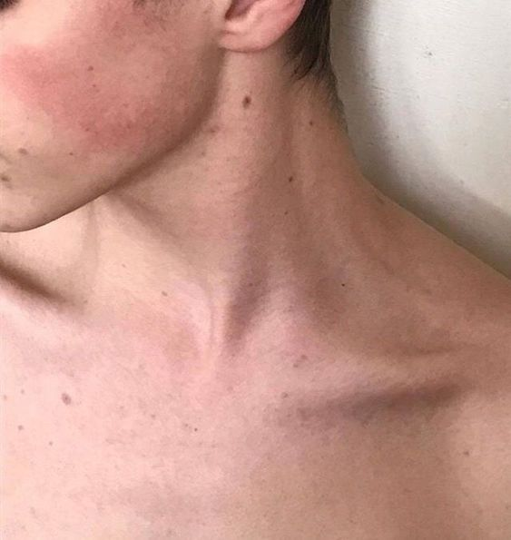

INHERITED TRACES

Taken
11.05.2003
𒊹
I have a small, dark mole on the left side of my neck that feels like a little secret I carry with me.
Growing up, I would often touch it absentmindedly, finding comfort in its presence.
I remember being about ten when my best friend pointed it out, calling it my “beauty mark.”
At first, I was shy about it, but as I embraced that nickname, it started to feel special—like a part of my identity.